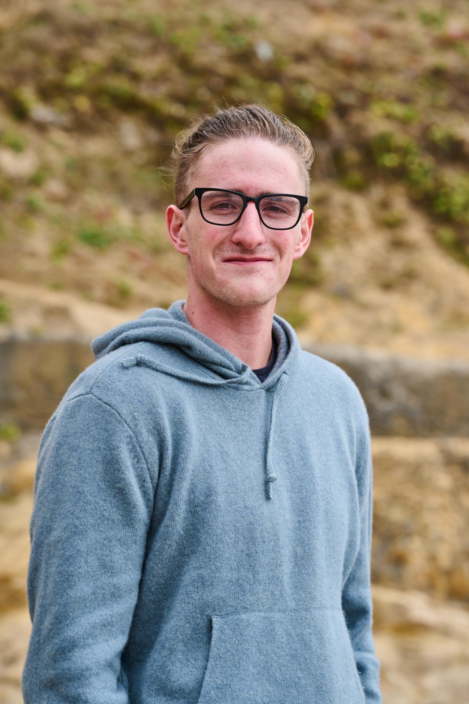

Making predictions language agnostic
One of my favorite tricks for improving linguistic robustness without extra labeled data

Member of Technical Staff at Open Athena
me [at] williamheld.comI work at Open Athena training open-source LLMs as part of the Marin Project. My research has focused on making language technology more robust and adaptable to new modalities, languages, and domains. Much of my work focuses on data-centered machine learning approaches in service of that goal.
I received my PhD from Georgia Tech, advised by Diyi Yang, and spent part of that time as a visiting student at Stanford. During my PhD, I interned at Meta on Llama pretraining and at Google on Assistant.
One of my favorite tricks for improving linguistic robustness without extra labeled data